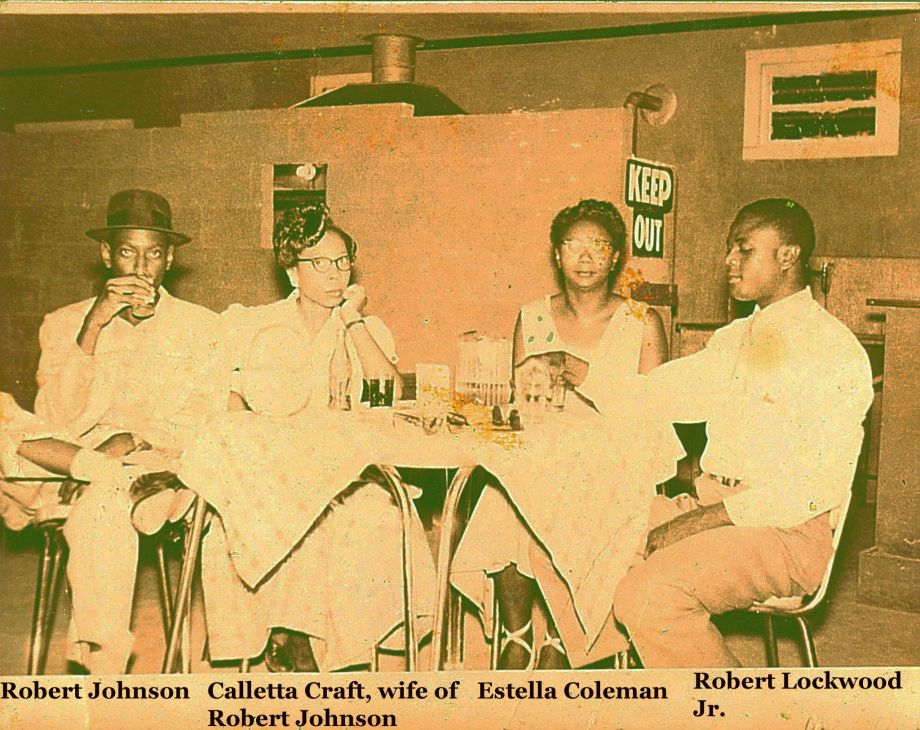

new photo of bluesman robert johnson unearthed.

A newly-analyzed photo purportedly shows Robert Johnson, the mysterious blues legend whose meager recordings became a groundwork for American popular music. Only two such photos have been unequivocally confirmed, and the prospect of another is held as a holy grail in blues society.Read more...